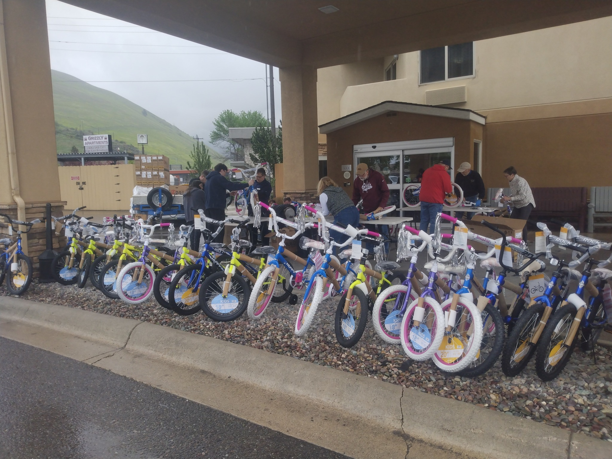
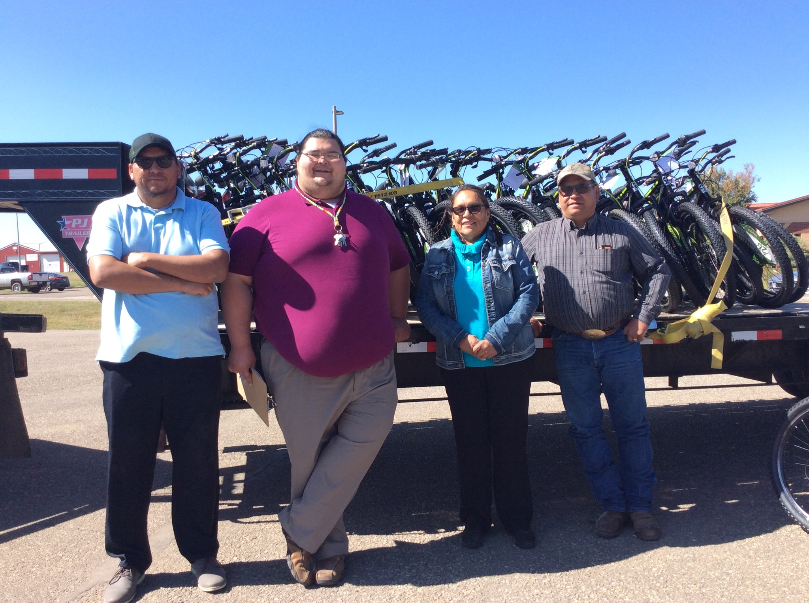

As a volunteer-based virtual nonprofit, we coordinate with tribal distribution centers to deliver fresh, culturally appropriate food and essential items to Indigenous communities across Montana's tribal lands, serving seven tribal nations.
Programs and services available to all community members
Our flagship program operates monthly during the school year, focusing on families with school-age children who face food gaps on nights and weekends. We source high-quality, fresh food — including produce from the Birch Creek Colony (Hutterites) — rather than processed surplus, and deliver to tribal distribution centers where tribal leaders allocate resources within their own communities. At its peak, EED has served nearly 300 families per month across the Blackfeet outlying communities.
Service Areas:Special seasonal distributions for Thanksgiving, Christmas, and Easter, providing complete holiday meal ingredients — including turkeys, potatoes, onions, carrots, and seasonal items — to families across Montana reservations. For the 2019 holiday season alone, EED collected 700 turkeys for Thanksgiving. As of December 2025, the organization continues distributing holiday food boxes to Blackfeet families, with a goal of 300 boxes for March 2026.
Distribution Points:Since 2018, EED has distributed over 1,920 bicycles to youth on the Blackfeet Nation, Crow Nation (Lodge Grass), and Fort Belknap Reservation. Bikes serve both as a tool for physical activity — combating the diabetes health crisis in these communities — and as a mobility resource in areas without reliable internet, cars, or public transit. Bicycles are purchased in bulk through a discounted partnership with Walmart and assembled by volunteers including the Rotary Club of Missoula and Rotary Club Sunrise Missoula. A single-day bike-building event in 2022 hosted by Comfort Inn University Missoula aimed for 1,400 bikes that year.


An aspirational, long-term initiative to develop Indigenous agricultural infrastructure on tribal lands, including plans for a cattle herd. This represents a strategic shift from immediate food relief toward building sustainable food systems. The concept has received enthusiastic support from Fort Belknap and other partners. As of available records, this remains in the planning stage — not yet an active, funded program.
Status:Our distributed volunteer network of 80+ volunteers statewide coordinates from tribal lands and Missoula alike, enabling our virtual nonprofit model without physical facility overhead. Volunteers work with wholesalers, Montana farmers, meat packers, and retailers including Walmart to source quality food in bulk at reduced prices. No paid executives or staff — everyone donates their time. Key volunteer coordinators include Janet Running Crane at the Heart Butte Mini Store drop-off site.
Get Involved:We send goods to tribal distribution centers, and tribal leaders allocate resources within their own communities — preserving Indigenous self-determination and ensuring culturally appropriate distribution. This model has been key to EED's ability to maintain trusting relationships with multiple nations despite complex political and cultural dynamics between and within tribal communities. Partner organizations include the Blackfeet Food Pantry, Heart Butte Commodity Center, and Diabetes Prevention Program as a community bridge partner.
Model: